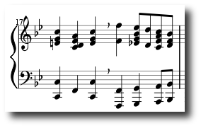

| 26 jan | Neues Windows Testrelease |
|
Ein neues Windows32 Testrelease
mscore-r646.exe
ist verfügbar.
|
| 24 Jan | MuseScore 0.9.1 |
|
Unglücklicherweise hat die Version 0.9.0 einen Fehler im Build-System.
Ein Build funktioniert nur bei einem Subversion Checkout.
Version 0.9.1 behebt diesen Fehler.
|
| 23 Jan 2008 | MuseScore 0.9 |
Es gibt jetzt zwei neue Paletten, "Noten" und "Eigenschaften Balken".
Diese Paletten ersetzen das "Noten Eingabepad" welches aus diesem
Release entfernt wurde. Paletten arbeiten mit drag&drop, können
aber ähnlich wie das alte Pad betrieben werden indem zunächst ein
Element ausgewählt wird gefolgt von einem Doppelclick auf
das Palettensymbol.
Das Erzeugen einer neuen Partitur wird nun durch den "Partitur Wizard"
unterstützt.
Neu implementierte Notensymbole sind die Vorschlagnoten
Acciaccatura und Appoggiatura. Auch gibt es ein neues Linienelement,
welches einen Text mit einer Linie kombiniert.
Texte können nun mit einem Kreis umrandet werde.
Komprimierten MusicXml-Dateien (*.mxl) können nun importiert und
exportiert werden.
|
| 19 Dez | MuseScore 0.8.0 |
|
MuseScore 0.8 kann drag&drop besser visualisieren, ermöglicht
kleine Noten & Pausen sowie kleingesetzte Notenzeilen. Erweitert
wurden Wiederholungen sowie der MusicXml Export/Import.
Neu sind horizontale und vertikale Frames, mit denen eine Partitur
strukturiert werden kann z.B. zum Absetzen von Codas oder für
Zwischentitel.
In der Windowsversion funktioniert jetzt dank Portaudio-Treiber
auch der Sequencer und der eingebaute Synthesizer. Die Windowsversion
hat jedoch noch diverse Probleme u.A. mit dem Notenfont.
|
| 15 Sep | MuseScore 0.7.0 |
|
MuseScore 0.7 ist da. Erstmals gibt es eine Windowsversion die jedoch
noch keinen Sequencer und Softwaresynthesizer enthält. Die neue
Version enthält neue Funktionen wie z.B. Takte einfügen und löschen,
ein verbessertes Layout, neue Notensatzelemente wie verschiedene
Notenköpfe, Übungsmarker, Tremolozeichen, Taktwiederholung
etc. sowie Bugfixes und natürlich schöne neue Bugs. Der Sequencer
kann auf Wunsch jetzt auch Wiederholungen spielen.
|
| 9 Sep | |
|
Die MuseScore Webseiten gibt es jetzt auch in deutsch.
|
| 18 aug | |
|
Some progress has been made for
drum notation. Code can be found
in the Subversion head branch.
|
| 30 jul |
MuseScore 0.6.1 |
|
MuseScore 0.6.1 is a bug fix release. It fixes the midi
import crash and adds some other small enhancements.
|
| 24 jul |
MuseScore 0.6.0 |
Today i uploaded the new MuseScore 0.6.0 release to SourceForge.
This release features a mix of bugfixes and new features.
New features are better MIDI import with automatic key detection and
pitch spelling, and a new import data format:
MuseData.
There are also some new symbols like arpeggio lines, breath markers,
and text frames. Usability is enhanced with a new dock widget
collecting all palettes. The symbol palette is now configurable with
custom symbols imported from various graphics formats.
Arpeggio
Line: |
 |
|
Breath marker in
piano system: |
 |
|